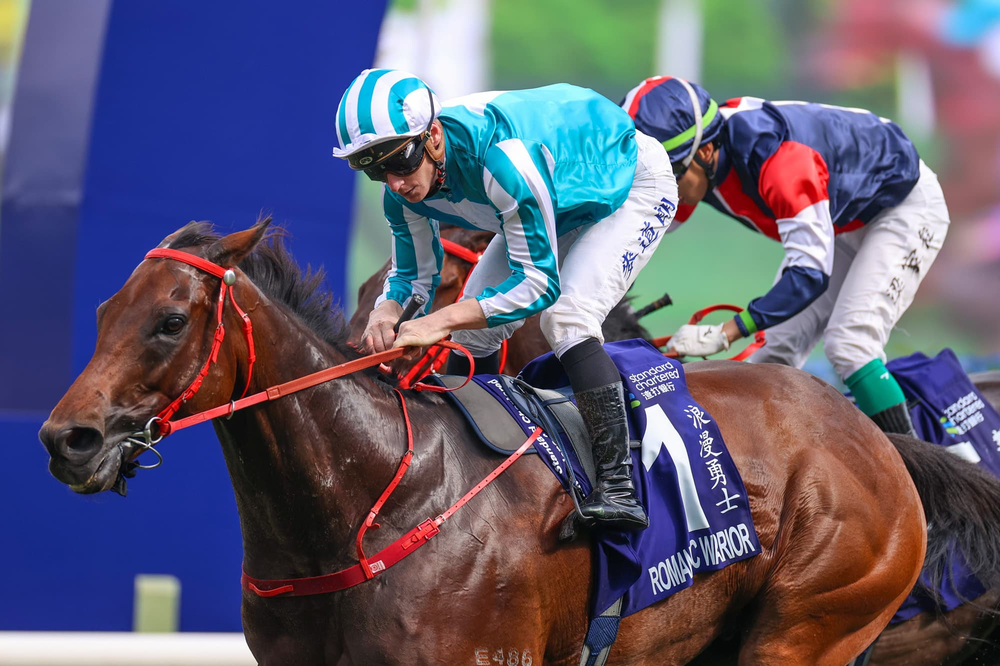

Fallece a los 92 años Gil Rowntree, miembro del Salón de la Fama del turf canadiense
El preparador Gil Rowntree, exaltado al Canadian Horse Racing Hall of Fame en 1997, falleció el pasado 24 de mayo a los 92 años de edad. Rowntree conquistó el Sovereign Award como Mejor Preparador de Canadá en 1975.

Foto: canadianthoroughbred.s3.ca-central-1.amazonaws.com
Gil Rowntree, uno de los preparadores más destacados de la historia del turf canadiense, falleció el pasado 24 de mayo a los 92 años de edad. Rowntree, que recibió su exaltación al Canadian Horse Racing Hall of Fame en 1997 en la categoría de preparadores de pura sangre, dejó una huella imborrable en el panorama hípico de su país con una trayectoria marcada por el éxito y el reconocimiento de la industria.
Su mayor logro individual llegó en 1975, cuando conquistó el Sovereign Award como Mejor Preparador de Canadá. Aquel mismo año, su principal cliente, Stafford Farm, se adjudicó el Sovereign Award al Mejor Propietario en la edición inaugural de estos galardones, que se han convertido en los más prestigiosos del turf canadiense. La coincidencia de ambos reconocimientos subrayó la solidez de aquella temporada y la relación profesional entre preparador y cuadra, un tándem que marcó una época en las carreras del país norteamericano.
— Redacción de Galope al Día